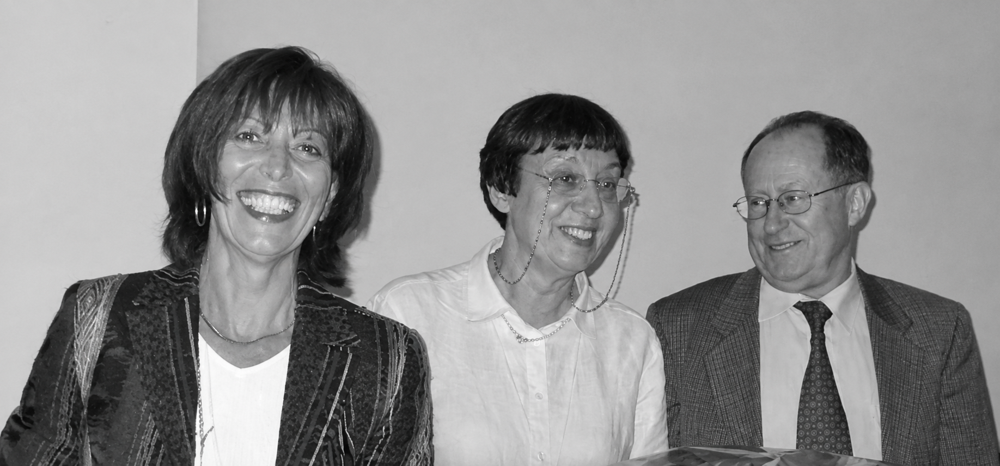
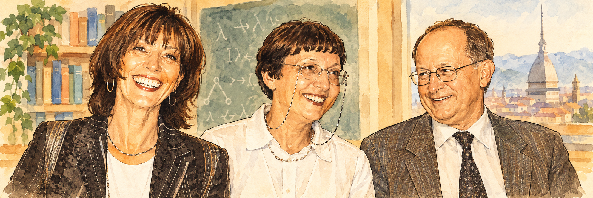

Theoretical Computer Science · Turin · 2026
MSM80
Workshop in Honour of Mariangiola Dezani, Simona Ronchi Della Rocca and Mario Coppo
Explore the program ↘
A community
of ideas.
This workshop is a gathering for colleagues and friends who want to celebrate Mariangiola Dezani-Ciancaglini, Simona Ronchi Della Rocca and Mario Coppo, whose 80th birthdays take place between 2026 and 2027. Mariangiola, Simona and Mario are outstanding researchers in the community of theoretical computer science for their seminal contributions to the fields of λ-calculus, type theory and foundations of programming languages. They have been students of Corrado Böhm in the early 70’s and spent most of their career at the Computer Science Department of the University of Torino, leading one of the largest research groups on formal methods for four decades. During this period they have been enthusiastic mentors for many young researchers now employed in prestigious institutions all over the world.
Program
A day of talks and celebration in theoretical computer science.
2026
SATURDAY · 19 DECEMBER
- Welcome
- Furio Honsell - My My Hey Hey, Lambda Calculus is here to stay (Questions in search of ideas and ideas in search of problems)
- Elaine Pimentel - Intersection types, intersecting lives
- Coffee Break
- Piergiorgio Odifreddi - How Goedel became Goedel
- Nobuko Yoshida - Mariangiola, Mario and Session Types
- Closing
- Dinner at Caffetteria Reale↗ -
Piazzetta Reale 1, Turin (16 min walk↗)

Registration
Registration for the workshop is free but mandatory. (Deadline: November 30th)
Workshop venue
Palazzo Nuovo
Sala Terracini
Via Sant'Ottavio, 20
Turin, Italy